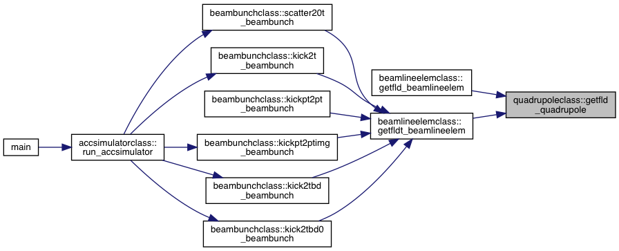
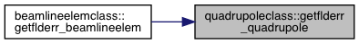
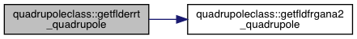
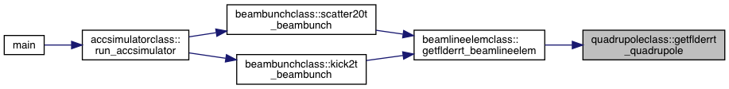
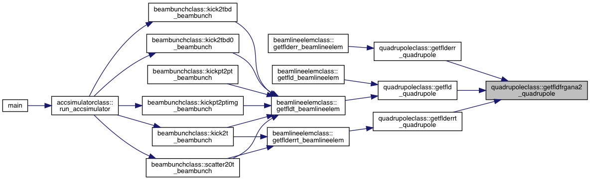

This class defines the linear transfer map and field for the quadrupole beam line elment. More...
Data Types | |
| interface | getparam_quadrupole |
| type | quadrupole |
| interface | setparam_quadrupole |
Functions/Subroutines | |
| subroutine | construct_quadrupole (this, numseg, nmpstp, type, blength) |
| subroutine | setparam1_quadrupole (this, i, value) |
| subroutine | setparam2_quadrupole (this, values) |
| subroutine | setparam3_quadrupole (this, numseg, nmpstp, type, blength) |
| subroutine | getparam1_quadrupole (this, i, blparam) |
| subroutine | getparam2_quadrupole (this, blparams) |
| subroutine | getparam3_quadrupole (this, blength, bnseg, bmapstp, btype) |
| subroutine | getflderr_quadrupole (pos, extfld, this, dx, dy, anglex, angley, anglez) |
| get external field with displacement and rotation errors. More... | |
| subroutine | getfld_quadrupole (pos, extfld, this) |
| get external field without displacement and rotation errors. here, the skew quad can can be modeled with nonzero anglez More... | |
| subroutine | getfldfrg_quadrupole (zz, this, bgrad) |
| interpolate the field from the SC rf cavity onto bunch location. More... | |
| subroutine | getfldfrgana_quadrupole (zz, this, bgrad) |
| subroutine | getfldfrgana2_quadrupole (zz, this, bgrad, bgradp, bgradpp |
| subroutine | getflderrt_quadrupole (pos, extfld, this) |
| get external field with displacement and rotation errors. More... | |
Variables | |
| integer, parameter, private | nparam = 11 |
Detailed Description
This class defines the linear transfer map and field for the quadrupole beam line elment.
Data Type Documentation
◆ quadrupoleclass::quadrupole
| type quadrupoleclass::quadrupole |
| Data Fields | ||
|---|---|---|
| integer | itype | |
| double precision | length | |
| integer | mapstp | |
| integer | nseg | |
| double precision, dimension(nparam) | param | |
Function/Subroutine Documentation
◆ construct_quadrupole()
| subroutine quadrupoleclass::construct_quadrupole | ( | type (quadrupole), intent(out) | this, |
| integer, intent(in) | numseg, | ||
| integer, intent(in) | nmpstp, | ||
| integer, intent(in) | type, | ||
| double precision, intent(in) | blength | ||
| ) |
◆ getfld_quadrupole()
| subroutine quadrupoleclass::getfld_quadrupole | ( | double precision, dimension(4), intent(in) | pos, |
| double precision, dimension(6), intent(out) | extfld, | ||
| type (quadrupole), intent(in) | this | ||
| ) |
get external field without displacement and rotation errors. here, the skew quad can can be modeled with nonzero anglez
Here is the call graph for this function:

Here is the caller graph for this function:

◆ getflderr_quadrupole()
| subroutine quadrupoleclass::getflderr_quadrupole | ( | double precision, dimension(4), intent(in) | pos, |
| double precision, dimension(6), intent(out) | extfld, | ||
| type (quadrupole), intent(in) | this, | ||
| double precision, intent(in) | dx, | ||
| double precision, intent(in) | dy, | ||
| double precision, intent(in) | anglex, | ||
| double precision, intent(in) | angley, | ||
| double precision, intent(in) | anglez | ||
| ) |
get external field with displacement and rotation errors.
Here is the call graph for this function:

Here is the caller graph for this function:

◆ getflderrt_quadrupole()
| subroutine quadrupoleclass::getflderrt_quadrupole | ( | double precision, dimension(4), intent(in) | pos, |
| double precision, dimension(6), intent(out) | extfld, | ||
| type (quadrupole), intent(in) | this | ||
| ) |
get external field with displacement and rotation errors.
Here is the call graph for this function:

Here is the caller graph for this function:

◆ getfldfrg_quadrupole()
| subroutine quadrupoleclass::getfldfrg_quadrupole | ( | double precision, intent(in) | zz, |
| type (quadrupole), intent(in) | this, | ||
| double precision, intent(out) | bgrad | ||
| ) |
interpolate the field from the SC rf cavity onto bunch location.
◆ getfldfrgana2_quadrupole()
| subroutine quadrupoleclass::getfldfrgana2_quadrupole | ( | double precision, intent(in) | zz, |
| type (quadrupole), intent(in) | this, | ||
| double precision, intent(out) | bgrad, | ||
| double precision | bgradp, | ||
| double precision | bgradpp | ||
| ) |
Here is the caller graph for this function:

◆ getfldfrgana_quadrupole()
| subroutine quadrupoleclass::getfldfrgana_quadrupole | ( | double precision, intent(in) | zz, |
| type (quadrupole), intent(in) | this, | ||
| double precision, intent(out) | bgrad | ||
| ) |
◆ getparam1_quadrupole()
| subroutine quadrupoleclass::getparam1_quadrupole | ( | type (quadrupole), intent(in) | this, |
| integer, intent(in) | i, | ||
| double precision, intent(out) | blparam | ||
| ) |
◆ getparam2_quadrupole()
| subroutine quadrupoleclass::getparam2_quadrupole | ( | type (quadrupole), intent(in) | this, |
| double precision, dimension(:), intent(out) | blparams | ||
| ) |
◆ getparam3_quadrupole()
| subroutine quadrupoleclass::getparam3_quadrupole | ( | type (quadrupole), intent(in) | this, |
| double precision, intent(out) | blength, | ||
| integer, intent(out) | bnseg, | ||
| integer, intent(out) | bmapstp, | ||
| integer, intent(out) | btype | ||
| ) |
◆ setparam1_quadrupole()
| subroutine quadrupoleclass::setparam1_quadrupole | ( | type (quadrupole), intent(inout) | this, |
| integer, intent(in) | i, | ||
| double precision, intent(in) | value | ||
| ) |
◆ setparam2_quadrupole()
| subroutine quadrupoleclass::setparam2_quadrupole | ( | type (quadrupole), intent(inout) | this, |
| double precision, dimension(:), intent(in) | values | ||
| ) |
◆ setparam3_quadrupole()
| subroutine quadrupoleclass::setparam3_quadrupole | ( | type (quadrupole), intent(inout) | this, |
| integer, intent(in) | numseg, | ||
| integer, intent(in) | nmpstp, | ||
| integer, intent(in) | type, | ||
| double precision, intent(in) | blength | ||
| ) |
Variable Documentation
◆ nparam
|
private |